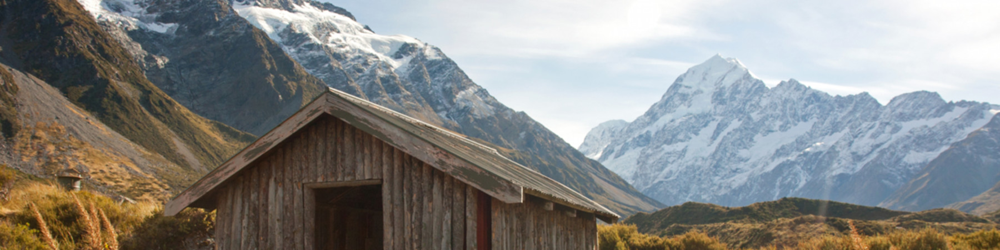

And a big honkin' mountain
Aoraki Mount Cook National Park is home of the highest mountains and the longest glaciers. It is alpine in the purest sense - with skyscraping peaks, glaciers and permanent snow fields, all set under a star-studded sky.
Although Aoraki Mount Cook encompasses 23 peaks over 3000 metres high, it is very accessible. State Highway 80 leads to Aoraki/Mt Cook Village which is situated beside scenic Lake Pukaki and provides a comfortable base for alpine activities. Far from city lights, the stargazing here is magnificent - Aoraki Mount Cook National Park forms the majority of New Zealand's only International Dark Sky Reserve. Mountaineers regard the area to be the best climbing region in Australasia, while less skilled adventurers find plenty of satisfaction with the mountain walks that lead to alpine tarns, herb fields and spectacular glacier views. Encounters with cheeky kea (mountain parrots) are part of the fun.
Under the highest mountain in New Zealand, the Aoraki/Mount Cook alpine village sits amongst sky-scraping peaks, phenomenal glaciers, permanent snow and all beneath a stunning star-studded sky.
The village itself provides a range of accommodation from an international style hotel to motels, backpackers and camping.
Aoraki/Mount Cook National Park surrounds the village, which is in excess of 700km with glaciers covering 40% of the land.
The village is at the base of New Zealand’s highest mountain, Aoraki/Mount Cook. This dazzling peak, known to Māori as Aoraki or Cloud Piercer, is one of 28 mountains in this alpine backbone which peak at over 3,050 metres, and hundreds of others not far short of that all making up the famous Southern Alps.

The village of Mount Cook - a comfortable haven in one of the most unforgiving parts of New Zealand.
Aoraki / Mount Cook National Park is an exceptionally beautiful place to visit. You don’t have to be a mountaineer to interact with the stunning scenery; there are various alpine walks beginning near the village, all about three hours return. Flightseeing, tours to the Tasman Glacier and stargazing are other ways to optimise your time here.